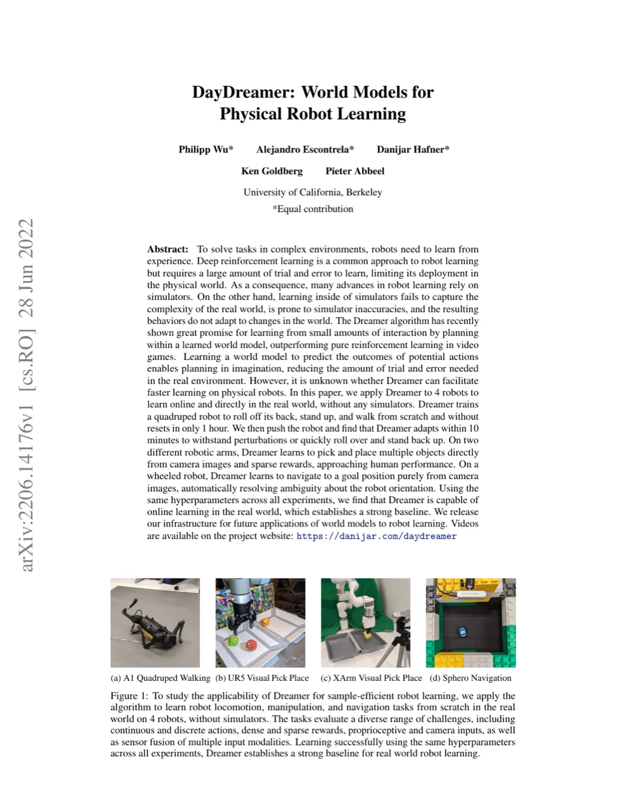
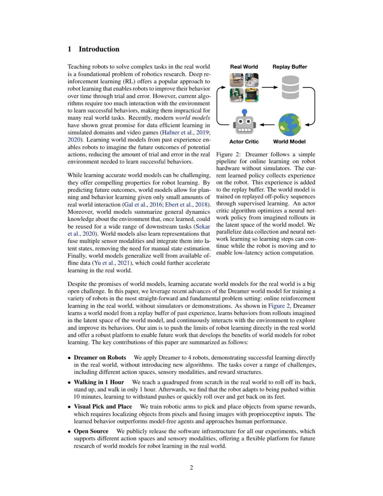
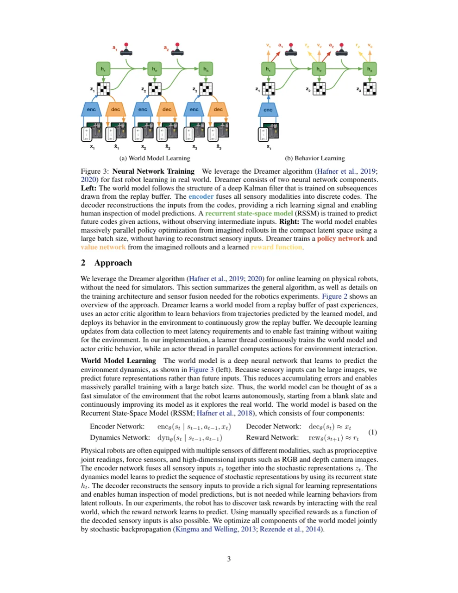
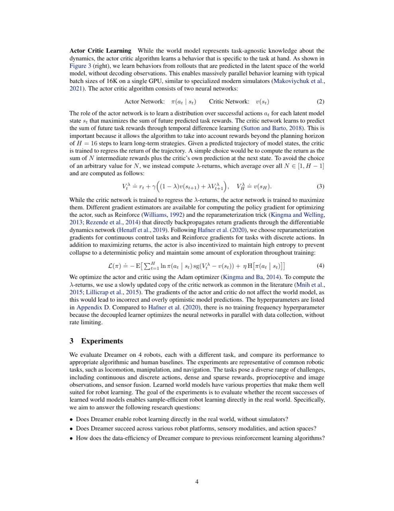
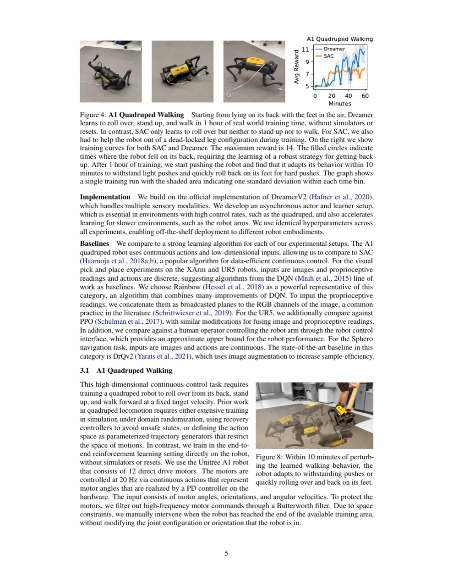

DayDreamer 将 Dreamer 世界模型算法直接应用于 4 款真实机器人，无需任何仿真器或人工示范，仅凭在线 reinforcement learning 即可高效学习。 四足机器人 1 小时从零学会翻身起立行走，机械臂在稀疏奖励下8–10 小时达到接近人类的抓放性能， 轮式机器人 2 小时学会纯视觉导航。
深度强化学习 (deep RL) 在机器人学习中广受欢迎，但现有算法需要大量与环境的试错交互， 在真实机器人上部署成本极高。为此，大多数工作依赖仿真器进行预训练， 再通过 sim-to-real 迁移到实体机器人。然而，仿真器难以精确复现真实世界的动态特性， 且训练出的策略无法自动适应环境变化。
"Learning inside of simulators fails to capture the complexity of the real world, is prone to simulator inaccuracies, and the resulting behaviors do not adapt to changes in the world."
世界模型 (world model) 通过从少量真实交互中学习环境动态，使智能体能够在"想象"中规划， 从而大幅减少现实中的试错次数。Dreamer 算法已在视频游戏中展现了卓越的数据效率， 但能否在真实机器人上同样奏效仍是开放问题——本文正面回答了这一问题。

DayDreamer 直接复用 DreamerV2 算法，核心是将 世界模型学习与行为学习 (actor-critic) 解耦并异步运行：learner 线程持续更新神经网络，actor 线程并行与真实机器人交互， 满足高控制频率下的低延迟需求。

世界模型基于 RSSM，包含四个组件：
所有组件联合优化（stochastic backpropagation）。由于预测的是紧凑潜在表示而非高维原始观测， 累积误差大幅降低，可在单块 GPU 上以 batch size 16K 进行大规模并行训练。
Actor 网络 π(at|st) 与 Critic 网络 v(st) 完全在世界模型的潜在空间中通过想象轨迹优化， 无需解码观测。Critic 通过 temporal difference learning 预测 λ-returns（平均 N∈[1,H-1]， imagination horizon H=15），Actor 通过最大化 λ-returns 学习策略。 连续动作任务使用 reparameterization gradients，离散动作使用 Reinforce gradients。 Actor 还通过熵正则化防止策略过早收敛。
超参数设置：replay buffer 容量 106，batch size 32，batch length 32， RSSM 隐状态维度 512，latent codes 32×32，discount γ=0.95，λ=0.95，学习率 10-4， 所有机器人实验使用完全相同的超参数。
在 4 款机器人上评估 Dreamer，对比各自领域最强的 model-free baseline： SAC（连续控制）、Rainbow DQN + PPO（离散视觉控制）、DrQv2（连续视觉控制）， 以及人类操作员作为近似上界。
任务：从背部朝上躺着出发，无任何 reset，学会翻身、站起、以目标速度行走。 动作为 12 个关节角度（20 Hz），输入为关节角、姿态、角速度。 奖励函数由 5 个分量组成（upright、髋/肩/膝关节角度、前向速度），最大奖励为 14。

任务：从第三方相机 RGB 图像中定位 3 个球，将其从一个料仓移到另一料仓。 稀疏奖励：抓住 +1，放回同仓 −1，放入对仓 +10。 动作离散（X/Y/Z 增量 + 夹爪开关，2 Hz）。对比 Rainbow DQN、PPO 以及人类操作员（20 分钟演示）。

XArm 为低成本 7-DOF 机械臂（约 0.5 Hz），使用 RGB-D 相机（深度+彩色）， 需学习将软物体从一仓移到另一仓（物体用绳连接夹爪，避免卡角）。 在改变光照条件（日出时强烈阴影）下，Dreamer 性能短暂下降后约 5 小时自适应恢复并超越原有性能。

Sphero Ollie 轮式机器人，仅凭俯视 RGB 图像（无本体感知），连续力矩控制（2 Hz）， 导航至固定目标点。奖励为负 L2 距离。 Dreamer 2 小时内达到平均目标距离 0.15（场地归一化），与专门为像素连续控制设计的 DrQv2 持平。
| 机器人 / 任务 | Baseline | Dreamer（本文） | 训练时长 |
|---|---|---|---|
| A1 四足行走 | SAC（仅学会翻身） | 翻身+站立+行走 | 1 小时 |
| UR5 抓放 | Rainbow / PPO（局部最优） | 2.5 obj/min ≈ 人类 | 8 小时 |
| XArm 抓放 | Rainbow（局部最优） | 3.1 obj/min ≈ 人类 | 10 小时 |
| Sphero 导航 | DrQv2（相当） | avg dist 0.15 | 2 小时 |
XArm 实验在日落后进行，日出时光照剧变导致性能下滑，但 Dreamer 无需算法改动， 约 5 小时自动适应并超越原有性能——展现了世界模型在 continual learning 场景下的潜力。 A1 机器人在行走策略学成后，10 分钟内自适应抵抗外力推扰或迅速翻身恢复。
"learning on hardware over many hours creates wear on robots that may require human intervention or repair." 长时间真实世界训练对机器人硬件造成磨损，可能需要人工维护或更换零件，限制了大规模部署。
"more work is required to explore the limits of Dreamer and our baselines by training for a longer time." 本文实验固定了训练时长预算（1–10 小时），更长时间训练下 Dreamer 及 baseline 的性能上限有待研究。
"we see tackling more challenging tasks, potentially by combining the benefits of fast real world learning with those of simulators, as an impactful future research direction." 目前任务难度有限；将真实世界学习与仿真器结合（例如仿真预训练 + 真实微调）可能是更有前景的路径。
由于训练空间有限，A1 机器人到达训练区边界时需要人工移回（不改变关节配置）， 这在一定程度上引入了人工干预，影响了"完全自主"的声称。